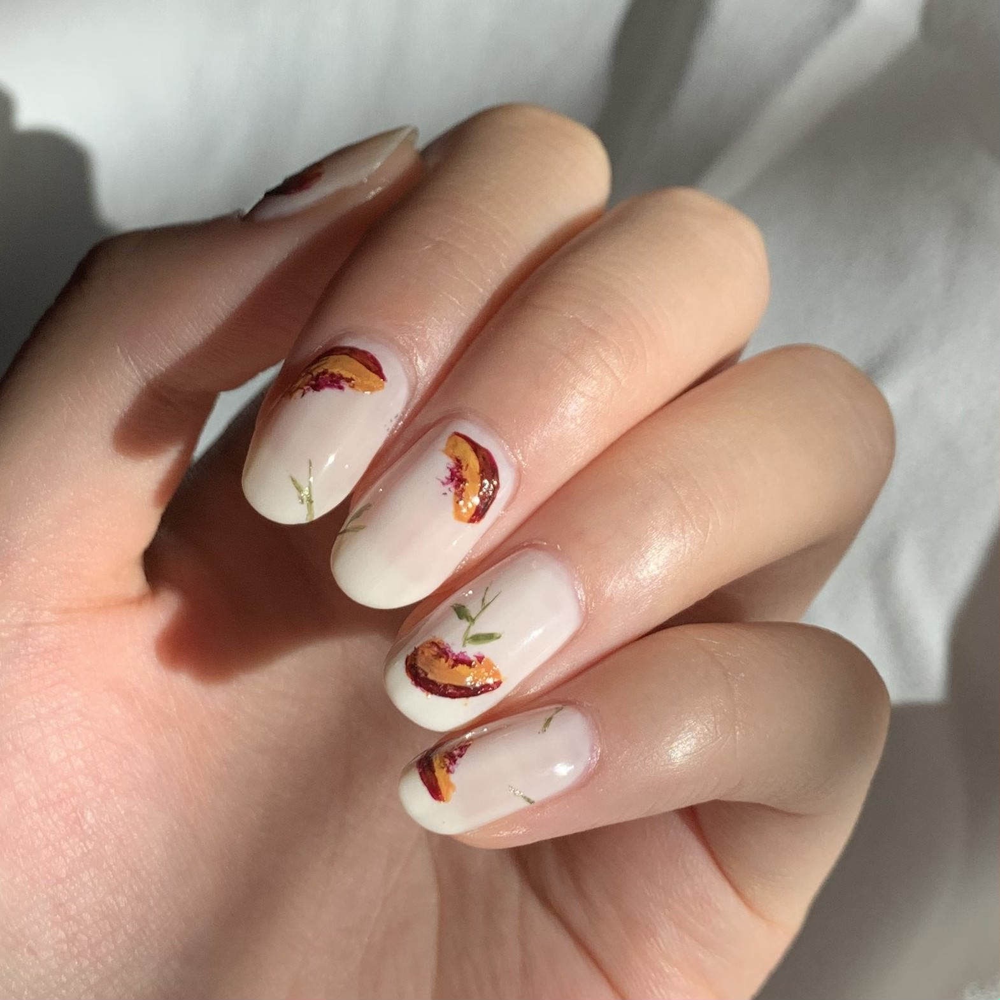
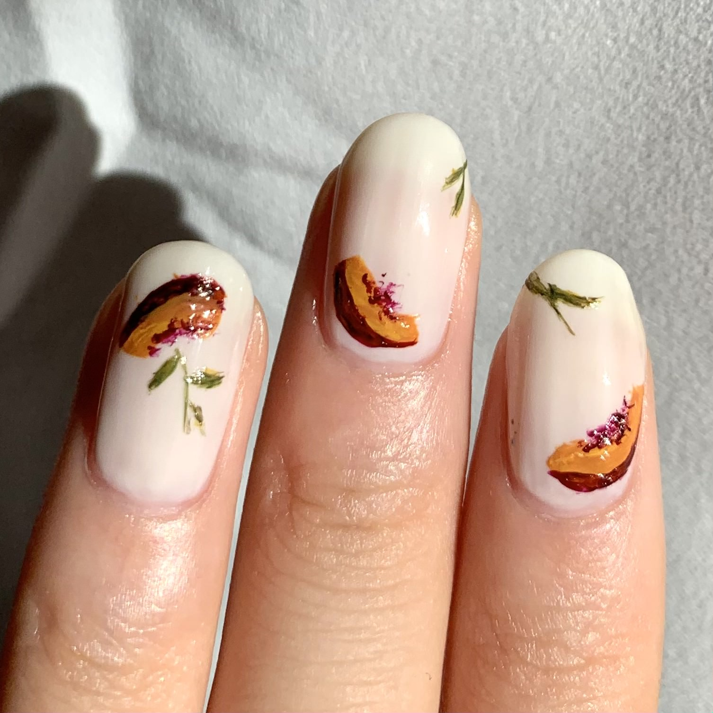
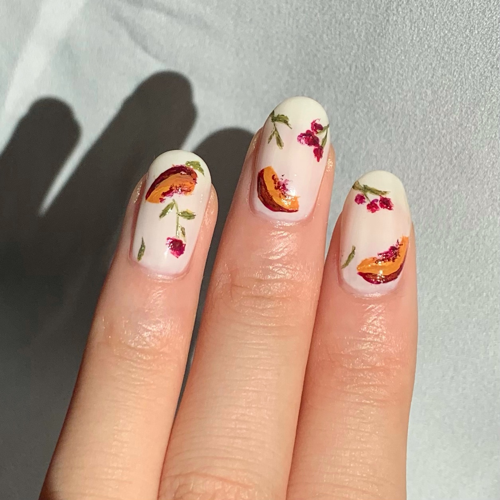

I. First map out where you want the flowers to be by painting the stems with light green. The flowers will look best when positioned at the corners of the nails diagonally, and you can also add a few small leaves to the stems.
II. Staying with the brush for greens, layer the dark olive green over some parts of the stems and leaves painted in step 1. Make sure that you don't cover all of the light green!
III. Continue to add to the stems and leaves by adding a little yellow-green as highlights. If the leaves become too yellow, you can adjust it by going back to the dark olive green.
IV. Moving on to the flowers, switch brushes and use the magenta color to create very loose patches that will act as the bases of the flowers. You can cluster some of the patches together in groups of two or three to change the pattern on each nail. This step does not have to be precise, and your flowers can be quite abstract.
V. Finish up the flowers by adding dark red, concentrating the darker areas near where the flower meets its stem. You can adjust the shading of the flowers by going back and forth between the magenta and the dark red as you wish.
